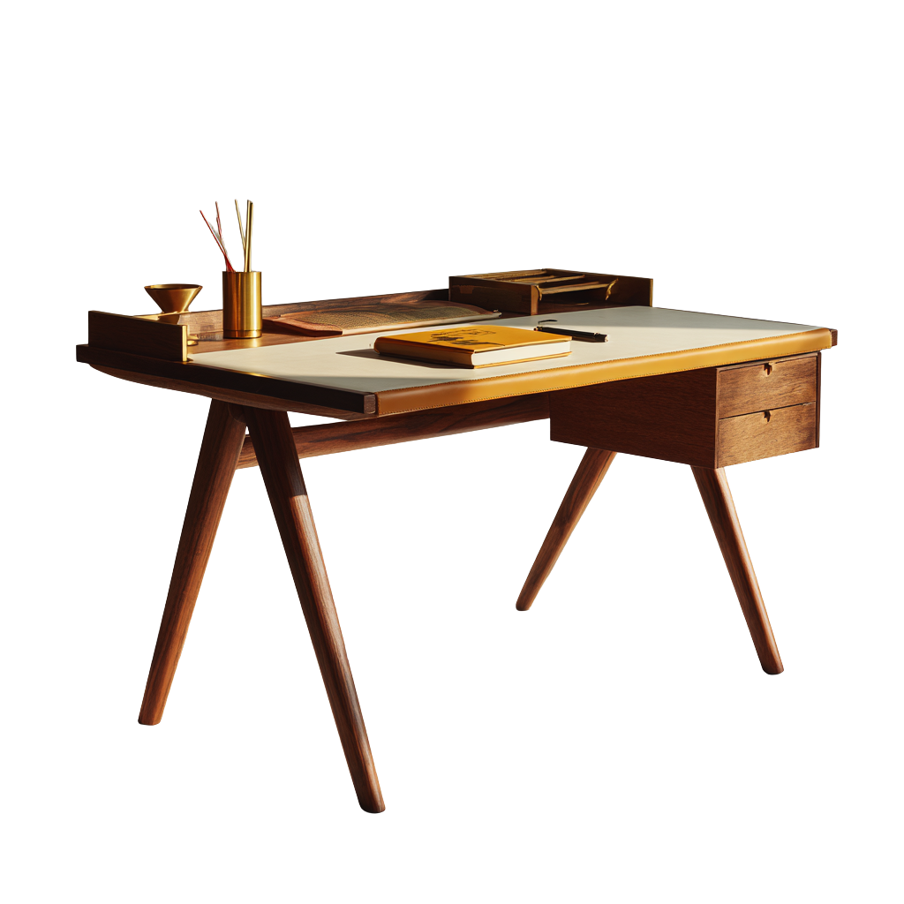

Sofá Patagonia
Líneas contemporáneas con estructura en nogal y tapizado en lino.
Desde hace 30 años, Hermanos Jota transforma maderas nativas argentinas en muebles que acompañan el día a día de las familias. Cada pieza nace en nuestro taller de Buenos Aires, donde el oficio se transmite de generación en generación: seleccionamos la madera a mano, cuidamos cada unión y terminamos con acabados que envejecen con dignidad. Nuestra tradición no es solo tiempo: es el compromiso de crear mobiliario duradero, cálido y con identidad propia.
Ver catálogo completoSelección de piezas emblemáticas de nuestro taller artesanal.
Líneas contemporáneas con estructura en nogal y tapizado en lino.

Respaldo generoso y cuero curtido a mano para espacios de lectura.

Superficie amplia en roble con canal para cables y cajonera oculta.

Tablero macizo con patas torneadas, pensada para reuniones familiares.